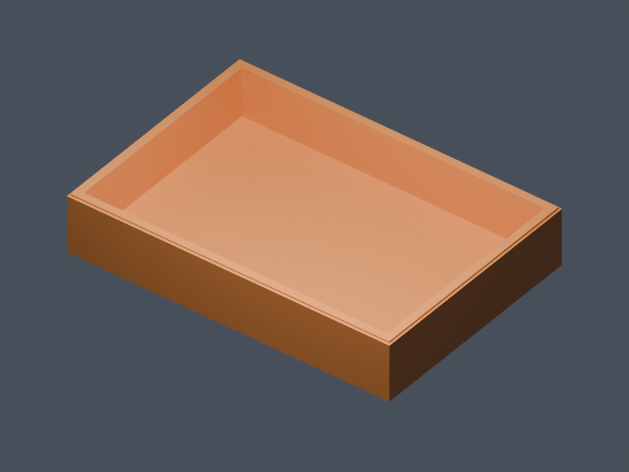

BLENDER / LEVEL 1
Blender Level 1
Learn the tools by building a desktop organizer tray. Practice each action here, then try it in real Blender.

YOUR FIRST PROJECT
A place for the little things.
A 100 × 70 × 18 mm tray, with 3 mm walls and floor. Start with a cube. Shape a cavity. Finish the rim. Export a mesh you can inspect in your slicer.
Four tutorials · 59 guided steps
Object Mode → Edit Mode → Bambu Studio
Allow 90–125 minutes, plus real Blender practice.
Desktop and mouse recommended. Blender 5.2.2 LTS reference; default Blender keymap. Blender’s drag controls support orbit, pan, and zoom with a mouse, pen, or touch.
Keep Blender open alongside the course.
Work through Setting up Blender for 3D printing to configure your own scene. Download Start if you need a recovery checkpoint. Repeat each exercise in Blender, save often, and use Save As before experimenting. Later checkpoints let you catch up without repeating everything.
Check your tray before printing
Open the STL in Bambu Studio. Check that the tray measures 100 × 70 × 18 mm and rests flat on the plate with the opening facing up. Slice it, then use the layer preview to inspect the floor and walls.
Save your Blender project so you can return to it. When you’re ready to print, follow your lab’s printer procedures.